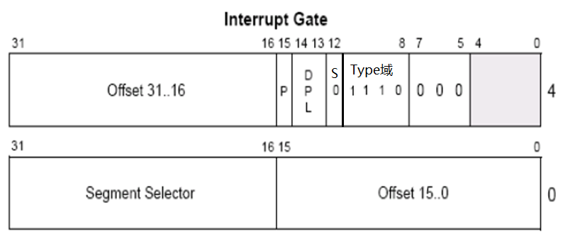
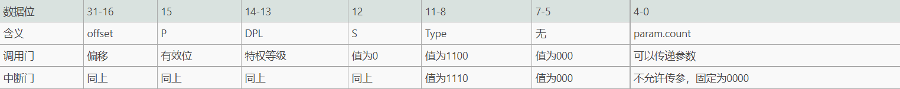
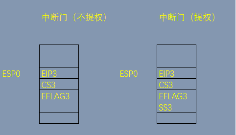
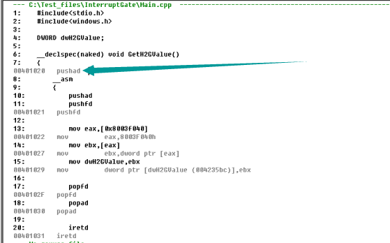
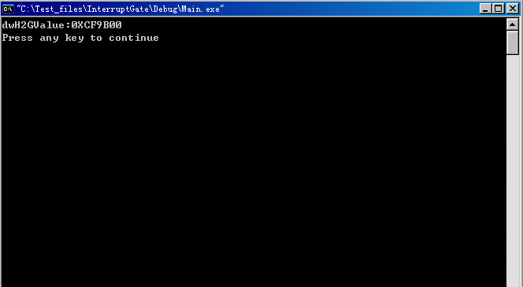
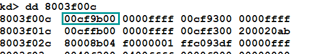

# 中断门
# 中断门的作用
先前学习的调用门在实际的 Windows 中并没有被使用，只是操作系统提供了调用门描述符给开发人员使用。相比之下，Windows 使用了中断门，用于：
系统调用（老的 CPU 通过中断门进入 RING（内核）0 层；新的 CPU 使用快速调用）
调试（常见的 INT3 对应硬编码为 0xCC）
# 中断门执行流程
【重点】
- 根据 INT XXX 的值 查 IDT（中断描述符表），找到对应的段描述符 这个描述符是一个中断门描述符
- 在中断门描述符中存储另一个代码段的选择子
- 选择子指向的段 段.Base + 偏移地址 就是真正要执行的地址
# IDT
IDT 全称 Interrupt Descriptor Table（中断描述符表）, 同 GDT 一样，IDT 也是由一系列描述符组成的，每个
描述符占 8 个字节。但要注意的是，IDT 表中的第一个元素不是 NULL。
IDT 中存储的段描述符都是系统段描述符
IDT 可以包含三种门描述符：①任务门描述符；②中断门描述符；③陷阱门描述符
在 windbg 中查看 IDT 表的基址和长度:
查看地址： r idtr
查看长度： r idtl
# 中断门描述符

当一个段描述符是一个调用门描述符时，有以下特征：
- S 位为 0，表示该段描述符为系统段描述符（中断门描述符属于系统段描述符）
- Type 域为 1110，表示该段描述符为 32 位中断门
- 低 16 位到 31 位存储一个段选择子，该段选择子才和代码真正要调用的地址相关
- 真正要调用的地址 = 段选择子所指向的段.Base + 32 位的段中偏移 （段中偏移分为两部分：高位 31-16 位和低位 15-0 位）
- 段.Base 默认为 0，故真正要调用的地址 = 32 位的段中偏移
# 调用门描述符和中断门描述符各部分的对比

可以发现中断门描述符和调用门描述符的结构基本一致，只在 Type 域和参数计数处不同（Type 域是描述符的类型标识；中断门不允许传参）
# 中断门堆栈变化
使用调用门的方法是 CALL FAR，而使用中断门的方法是 INT N ，其中，N 表示中断门描述符在 IDT 表中的下标。
和调用门一样，中断门也可以用来提权。不提权时， INT N 会压栈 CS，EFLAG EIP；
提权时，会依次压栈 SS ESP EFLAG CS EIP。
需要用堆栈保存 EFLAG 是因为中断门会将 EFLAG 的 IF 位置 0。

# 实践
知道了理论，开始实践。
- 构造 Interrupt Gate Descriptor
0000 0000 0000 0000 1110 1110 0000 0000`0000 0000 0000 1000 0000 0000 0000 0000
段内偏移还不确定，暂时置为 0。
十六进制为 0000ee00`00080000
- 测试代码
#include<stdio.h> | |
#include<windows.h> | |
DWORD dwH2GValue; | |
__declspec(naked) void GetH2GValue() | |
{ | |
__asm | |
{ | |
pushad | |
pushfd | |
// 读高 2G 内存 | |
mov eax,[0x8003f00c] | |
mov ebx,[eax] | |
mov dwH2GValue,ebx | |
popfd | |
popad | |
iretd | |
} | |
} | |
void main() | |
{ | |
__asm | |
{ | |
INT 0x20 // 暂时有疑问，选这个索引是因为有的博客说这个地址没有用上。可是我在 windbg 中看到这个地址也是有值的。 | |
} | |
printf("dwH2GValue:%#X",dwH2GValue); | |
} |
VC 中反汇编查看

我们要跳转的地址为 0x00401020
确定 Interrupt Gate Descriptor 为： 0040ee00`00081020
- 在 windbg 中赋值
直接在 IDT 表中修改索引为 0x20 的中断门描述符
eq 8003f500 0040ee00`00081020
- 在调试机中运行代码
结果：

在 windbg 中确认打印数值无误。

# Reference
滴水课件
https://www.52pojie.cn/thread-1455684-1-1.html